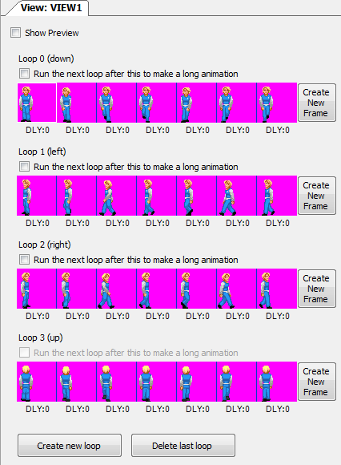
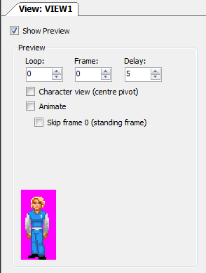
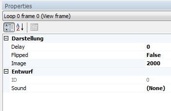

View Editor
Views
In the view editor you add sprites from the Sprite Manager to animation strips called Loops. This is the way that you create the walkcycles for your Characters as well as all other in-game animations.

For walking views you will typically have 4 or 8 Loops, to represent the different directions for walking in. If your character will only be walking left, right, up, and down , then you probably just want 4 Loops. If a character needs separate animations for diagonal movement then you might need 8 Loops. You assign the 4 or 8 walking animations per character in the Character Editor.
It is good practice to use a new loop for every character and also for special character animations. For object animations, you could add a lot of animation Loops to one single View - sometimes this can be useful for organisation purposes (e.g. one Object animation View for every chapter of your game). You can name the View by right-clicking it in the project explorer.
Newer versions of AGS can have unlimited Views, unlimited Loops per view and unlimited Frames per loop. Still, there is some overhead with the way the AGS Editor previews them, so when you have a lot of large Frames you should consider using a new View for each animation.
Show Preview
When you tick the checkbox above the Loops called Show Preview you will see an extra panel appear where the animation can be previewed. You can either manually browse through all the frames of the Loop or you check the animate checkbox to see it in motion.
The Skip Frame 0 (standing Frame) checkbox does exactly that, it skips Frame 0 for the preview animation. This is only important for previews of views that are used as walking views for a character.
When you animate a game object or you want the character to animate for something other than walking (like picking up an Inventory Item) Frame 0 is always included in the animation. When the view is used as a walking view Frame 0 is skipped for the animation until the character reaches the endpoint of the walk and stops there. Then Frame 0 is displayed for the direction that the character is currently facing.

Properties

Delay
With the delay setting you delay the displaytime of the selected frame by a set amount. This delay is in game frames, so how long the delay is in time depends on how many frames per second your game is running at. You can check the game-speed with the GetGameSpeed function. By default AGS games run at 40 FPS, but this can be configured by setting the desired frame rate using the SetGameSpeed function. This delay value is specific to this single frame only. To add delay to an entire animation, use the delay parameter of the Animate function instead. This frame delay is added to the overall loop delay.
Flipped
You can flip a single frame with this property. This is very useful for mirrored animations, such as walkcycles, where a flipped version of the walk-left animation and be used to walk right, for example. Note that instead of flipping just a single frame you can also flip the whole loop by using the Right Click Context Menu.
Image
The sprite number for this frame's image, as displayed in the Sprite Manager.
ID
The will display the frame number within the loop, for the selected frame. This value is not directly editable.
Sound
Play a sound when this frame is displayed. This is typically used to add footsteps to character walkcycles.